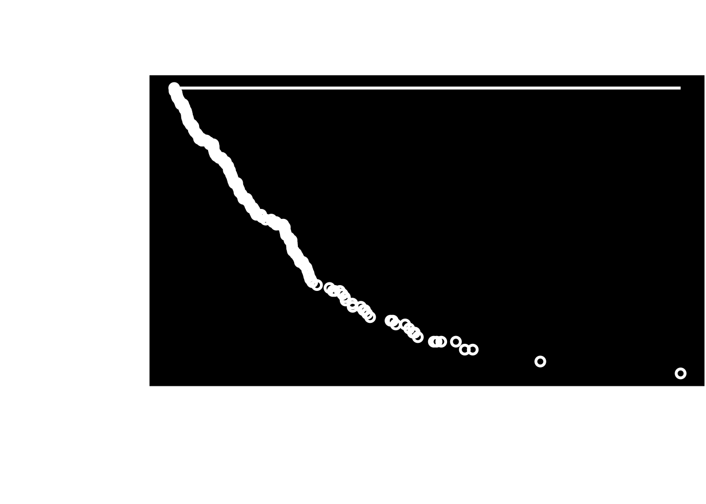

library(TemporalHazard)
library(survival)
set.seed(1001)
n <- 180
dat <- data.frame(
time = rexp(n, rate = 0.35) + 0.05,
status = rbinom(n, size = 1, prob = 0.6),
age = rnorm(n, mean = 62, sd = 11),
nyha = sample(1:4, n, replace = TRUE),
shock = rbinom(n, size = 1, prob = 0.18)
)
fit <- TemporalHazard::hazard(
Surv(time, status) ~ age + nyha + shock,
data = dat,
theta = c(mu = 0.25, nu = 1.10, beta1 = 0, beta2 = 0, beta3 = 0),
dist = "weibull",
fit = TRUE,
control = list(maxit = 300)
)
summary(fit)
#> hazard model summary
#> observations: 180
#> predictors: 3
#> dist: weibull
#> engine: native-r-m2
#> converged: FALSE
#> log-lik: 28089.8
#> evaluations: fn=135, gr=135
#> message: ERROR: ABNORMAL_TERMINATION_IN_LNSRCH
#>
#> Coefficients:
#> estimate std_error z_stat p_value
#> mu 3.126462e-03 NA NA NA
#> nu 2.101821e+02 NA NA NA
#> beta1 1.544198e+00 NA NA NA
#> beta2 4.913602e-01 NA NA NA
#> beta3 2.438124e-02 NA NA NAGetting Started with TemporalHazard
Build, fit, and predict with temporal parametric hazard models
Source:vignettes/getting-started.qmd
This vignette shows the minimal workflow for fitting a parametric hazard model, summarizing the fit, and generating predictions.
Prediction workflow
new_patients <- data.frame(
time = c(0.5, 1.5, 3.0),
age = c(50, 65, 75),
nyha = c(1, 3, 4),
shock = c(0, 0, 1)
)
pred_input <- new_patients
new_patients$linear_predictor <- predict(fit, newdata = pred_input, type = "linear_predictor")
new_patients$hazard_multiplier <- predict(fit, newdata = pred_input, type = "hazard")
new_patients$survival <- predict(fit, newdata = pred_input, type = "survival")
new_patients$cumulative_hazard <- predict(fit, newdata = pred_input, type = "cumulative_hazard")
new_patients
#> time age nyha shock linear_predictor hazard_multiplier survival
#> 1 0.5 50 1 0 77.70128 5.562084e+33 1
#> 2 1.5 65 3 0 101.84698 1.704435e+44 1
#> 3 3.0 75 4 1 117.80470 1.451886e+51 1
#> cumulative_hazard
#> 1 0
#> 2 0
#> 3 0Visualizing predicted survival
The hvtiPlotR package provides publication-quality plotting for parametric hazard models via hv_hazard() and its plot() method. Here we build a survival curve over a fine time grid for a median-profile patient and overlay the Kaplan-Meier nonparametric estimate from the raw data.
if (requireNamespace("hvtiPlotR", quietly = TRUE)) {
library(hvtiPlotR)
# Parametric curve on a fine grid
t_grid <- seq(0.05, max(dat$time), length.out = 80)
curve_df <- data.frame(
time = t_grid,
AGE = median(dat$age),
nyha = 2,
shock = 0
)
curve_df$survival <- predict(fit, newdata = curve_df, type = "survival")
# Kaplan-Meier empirical overlay
km <- survival::survfit(survival::Surv(time, status) ~ 1, data = dat)
km_df <- data.frame(
time = km$time,
estimate = km$surv * 100
)
# Build plot with hv_hazard + plot
hz_obj <- hv_hazard(
curve_data = transform(curve_df, survival = survival * 100),
x_col = "time",
estimate_col = "survival",
empirical = km_df,
emp_x_col = "time",
emp_estimate_col = "estimate"
)
plot(hz_obj) +
ggplot2::scale_y_continuous(limits = c(0, 100)) +
ggplot2::labs(
x = "Years after surgery",
y = "Freedom from death (%)",
title = "Parametric survival vs Kaplan-Meier"
) +
hv_theme()
}
Numerical helpers
The numerical helper functions remain available directly when you need stable log-scale calculations for custom work or debugging.
TemporalHazard::hzr_log1pexp(c(-2, 0, 2))
#> [1] 0.1269280 0.6931472 2.1269280